案例 01 · 肯尼斯·阿诺德目击事件（现代飞碟时代的起点）
可信度：高
1947 年 6 月 24 日 ｜ 美国华盛顿州雷尼尔山附近
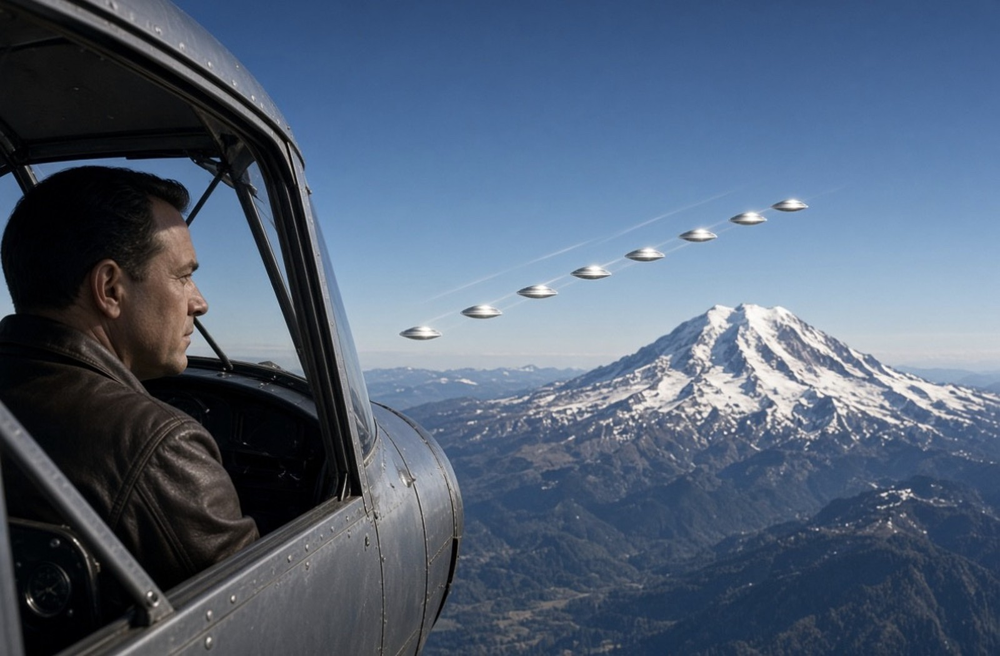
⚠️ AI 生成示意图，非历史实拍
- 时间：1947 年 6 月 24 日
- 地点：美国华盛顿州雷尼尔山附近
- 事件概述：私人飞行员肯尼斯·阿诺德（Kenneth Arnold）驾驶飞机在雷尼尔山附近搜寻一架失事飞机时，看到 9 个发光物体以编队高速飞行。他描述其运动方式"像碟子在水面上打水漂"（saucer-like），媒体据此创造了"飞碟"（flying saucer）一词。他估计物体时速约 1200 英里（按当时他的飞行速度与地标计时推算）。
- 关键证人/证据：阿诺德本人（资深飞行员）；事后有其他飞行员报告当日在附近空域看到类似物体；无影像、无雷达记录。
- 官方调查结论：空军"蓝皮书计划"（Project Blue Book）将其归为"海市蜃楼"（mirage）；阿诺德本人终身不接受该结论。
- 可信度：高。理由：证人身份明确、陈述前后一致且终身未改口；它是现代 UFO 关注的起点，历史意义无可替代。但必须承认：这是一个单人目击案例，无任何物证。
- 已证实：目击报告本身、媒体报道、官方"海市蜃楼"结论。未证实：物体究竟是什么、阿诺德的速度估算是否准确。
💡 全网同步：在下方讨论串首条点击 👍 / 👎 表情投票；发表留言需要登录 GitHub 账号。
案例 02 · 罗斯威尔事件
可信度：中
1947 年 7 月 ｜ 美国新墨西哥州罗斯威尔附近（科罗纳镇福斯特牧场）
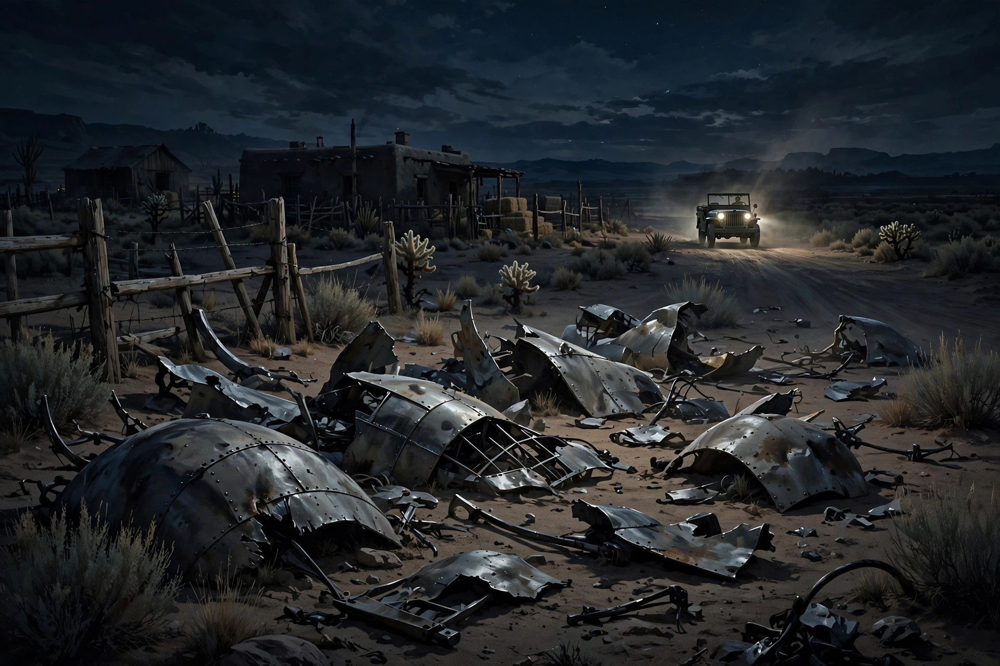
⚠️ AI 生成示意图，非历史实拍
- 原始资料：FBI Guy Hottel 备忘录扫描件（4 页，公共领域）。⚠️ 引用警示：FBI 官方强调该备忘录与 1947 年罗斯威尔事件无关、内容系传闻，请勿当作罗斯威尔证据引用，本馆收录仅作"著名误传文件"存档。
- 时间：1947 年 7 月
- 地点：美国新墨西哥州罗斯威尔附近（科罗纳镇福斯特牧场）
- 事件概述：牧场主麦克·布拉泽尔（Mac Brazel）发现散落的奇怪残骸，上报治安官后转交罗斯威尔陆军航空队基地。7 月 8 日基地发布新闻稿称"找回一架飞碟"，次日军方改口称是气象气球残骸。
- 关键证人/证据：基地情报官杰西·马塞尔（Jesse Marcel Sr.）经手残骸，多年后称材料"不属于地球已知物质"；多名当年军人和平民的晚年证词；FBI 备忘录等解密文件。
- 官方调查结论：美国空军 1994 年报告称残骸来自"莫古尔计划"（Project Mogul，搭载窃听设备的高空气球，用于监测苏联核试验）；1997 年报告称所谓"外星人尸体"目击是把后来的假人空投试验记忆混淆了。
- 可信度：中。理由：残骸事件本身真实发生，军方前后矛盾的说辞（先承认"飞碟"次日改口）是合理的质疑起点；但"外星飞船坠毁"的说法没有任何物证支撑，主要依赖几十年后的回忆证词。必须 balanced 呈现：官方解释（莫古尔气球）有文件链条，阴谋论版本没有。
- 已证实：残骸被回收、军方两份矛盾声明、莫古尔计划的存在。未证实：残骸是外星飞船、有外星人尸体、政府掩盖。
💡 全网同步：在下方讨论串首条点击 👍 / 👎 表情投票；发表留言需要登录 GitHub 账号。
案例 03 · 1952 年华盛顿特区不明飞行物波
可信度：高
1952 年 7 月 19–20 日、7 月 26–27 日（两个周末） ｜ 美国首都华盛顿特区上空
⚠️ AI 生成示意图，非历史实拍
- 时间：1952 年 7 月 19–20 日、7 月 26–27 日（两个周末）
- 地点：美国首都华盛顿特区上空
- 事件概述：华盛顿国家机场和安德鲁斯空军基地的雷达多次捕捉到不明目标，多名飞行员和地面人员目击发光物体，空军两度紧急起飞战机拦截，目标在战机接近时消失、战机离开后重现。
- 关键证人/证据：多座雷达站同步记录、民航与军方飞行员目击、空管员证词；事件登上全国报纸头条。
- 官方调查结论：空军召开当时规模最大的新闻发布会，解释为"温度逆变"造成的雷达假回波；蓝皮书计划负责人爱德华·鲁佩尔特（Edward Ruppelt）私下对此解释表示怀疑。
- 可信度：高。理由：雷达+目击+战机拦截三重印证，发生在首都核心空域，官方不得不公开回应。"温度逆变"说至今被许多研究者认为无法解释全部特征（如目标的高速机动）。
- 已证实：雷达记录、拦截行动、官方发布会。未证实：目标的真实性质。
💡 全网同步：在下方讨论串首条点击 👍 / 👎 表情投票；发表留言需要登录 GitHub 账号。
案例 04 · 伦德尔舍姆森林事件（"英国的罗斯威尔"）
可信度：高
1980 年 12 月 26–28 日 ｜ 英国萨福克郡，伍德布里奇空军基地（RAF Woodbridge）旁的伦德尔舍姆森林
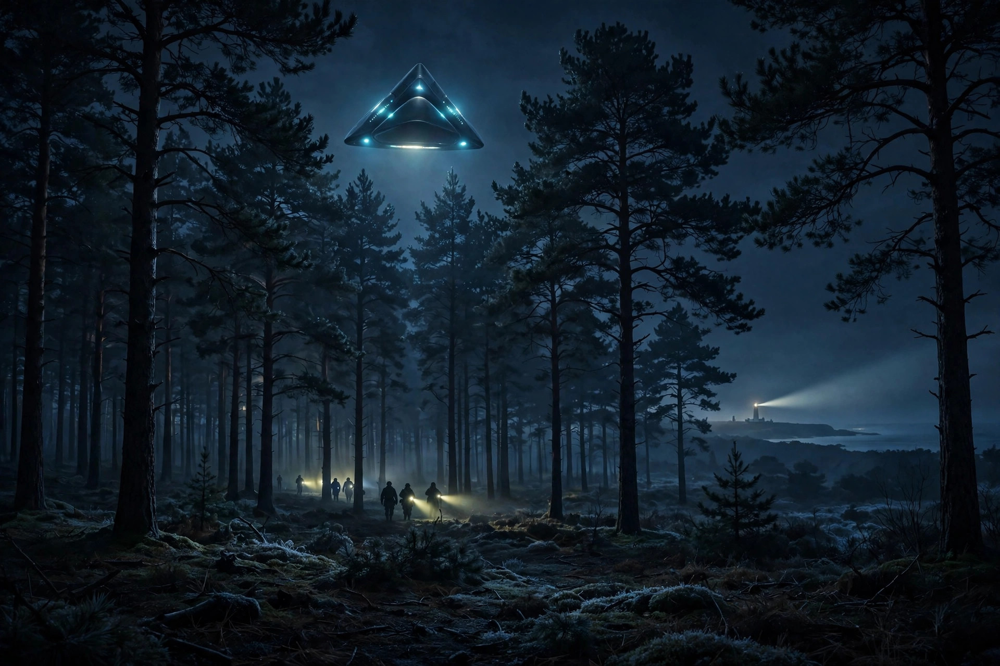
⚠️ AI 生成示意图，非历史实拍
- 时间：1980 年 12 月 26–28 日
- 地点：英国萨福克郡，伍德布里奇空军基地（RAF Woodbridge）旁的伦德尔舍姆森林
- 事件概述：美军驻英空军基地多名安全人员连续三晚报告森林中出现奇怪灯光；据吉姆·潘尼斯顿（Jim Penniston）和约翰·伯勒斯（John Burroughs）陈述，第一晚有人近距离接触了一个三角形飞行器并触摸了它；副基地指挥官查尔斯·霍尔特（Charles Halt）中校第三晚带队进入森林，用录音机记录了全过程并测得辐射读数异常、发现地面压痕。
- 关键证人/证据：霍尔特备忘录（1981 年 1 月 13 日致英国国防部，现已解密）；霍尔特的现场录音带；多名军人证词；地面痕迹与辐射读数记录。
- 官方调查结论：英国国防部结论为"对国防无威胁"，未深入调查；质疑者提出奥福德角灯塔（Orford Ness lighthouse）的灯光可能是误认来源。
- 可信度：高。理由：军方证人、正式备忘录、录音、物理痕迹，证据维度完整。灯塔说无法解释近距离接触陈述与辐射读数，但"近距离接触三角形飞行器"的部分仅依赖当事人陈述。
- 已证实：备忘录、录音、辐射与压痕记录。未证实：潘尼斯顿"触摸飞行器并接收二进制信息"的说法（系其多年后补充）。
💡 全网同步：在下方讨论串首条点击 👍 / 👎 表情投票；发表留言需要登录 GitHub 账号。
案例 05 · 比利时大三角波
可信度：高
1989 年 11 月 – 1990 年 4 月（高峰为 1990 年 3 月 30–31 日夜） ｜ 比利时全境（列日、布鲁塞尔、瓦夫尔等地）
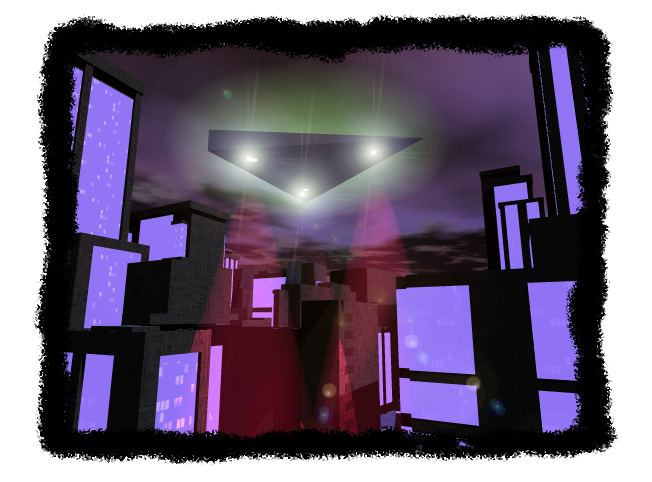
📷 比利时大三角波复原示意图（公共领域）
- 时间：1989 年 11 月 – 1990 年 4 月（高峰为 1990 年 3 月 30–31 日夜）
- 地点：比利时全境（列日、布鲁塞尔、瓦夫尔等地）
- 事件概述：数千名比利时民众报告看到巨型黑色三角形飞行器，低空、无声、底部有三盏强光。1990 年 3 月 30 日夜，比利时空军两架 F-16 紧急升空，地面雷达与机载雷达多次锁定目标，目标表现出极端机动（短时间内从 3000 米骤降至数百米、速度从 280 公里/时突增至 1800 公里/时）。
- 关键证人/证据：比利时空军官方雷达数据、F-16 飞行员报告、空军上校德布劳沃（Wilfried De Brouwer）在新闻发布会上公开承认拦截行动；数千份目击报告。
- 官方调查结论：比利时空军承认雷达锁定属实，但无法确认目标性质；从未给出最终解释。
- 可信度：高。理由：北约成员国空军官方承认的雷达拦截记录，证据等级极高。但需注明：当年流传最广的那张"三角形 UFO 照片"（Petit-Rechain，1990）已于 2011 年被拍摄者承认是聚苯乙烯模型造假——照片是假的，不等于整个波次是假的，两者必须分开。
- 已证实：F-16 拦截与雷达锁定（空军官方承认）、大规模目击。未证实：三角飞行器的来源与性质。
💡 全网同步：在下方讨论串首条点击 👍 / 👎 表情投票；发表留言需要登录 GitHub 账号。
案例 06 · 凤凰城之光
可信度：高
1997 年 3 月 13 日 ｜ 美国亚利桑那州（从内华达州界到图森，覆盖凤凰城）
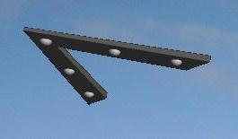
📷 1997 年目击者实拍照片（公共领域）
- 时间：1997 年 3 月 13 日
- 地点：美国亚利桑那州（从内华达州界到图森，覆盖凤凰城）
- 事件概述：当晚约 20:00，一个巨大的 V 形（或回旋镖形）发光编队缓慢飞越亚利桑那州，数千人目击，包括时任州长法夫·西明顿（Fife Symington，后公开承认自己也看到了）。约 22:00，凤凰城南山上空又出现一排悬空不动的光点。
- 关键证人/证据：数千名目击者、大量录像、州长证词。
- 官方调查结论：22:00 的那排光点已被证实是马里兰州空中国民警卫队 A-10 攻击机在巴里·戈德华特靶场投放的照明弹（军方后来承认）；20:00 的 V 形编队至今无官方解释。
- 可信度：高（事件发生本身）/ 中（V 形编队的性质）。理由：这是教科书式的"一件事、两种成分"案例——必须把已解释的照明弹部分和未解释的 V 形编队分开，混为一谈是常见错误。
- 已证实：大规模目击、照明弹的军方承认。未证实：V 形编队是什么。
💡 全网同步：在下方讨论串首条点击 👍 / 👎 表情投票；发表留言需要登录 GitHub 账号。
案例 07 · 尼米兹号/"Tic Tac"事件
可信度：高
2004 年 11 月 14 日 ｜ 美国加州圣迭戈外海，尼米兹号航母战斗群训练空域
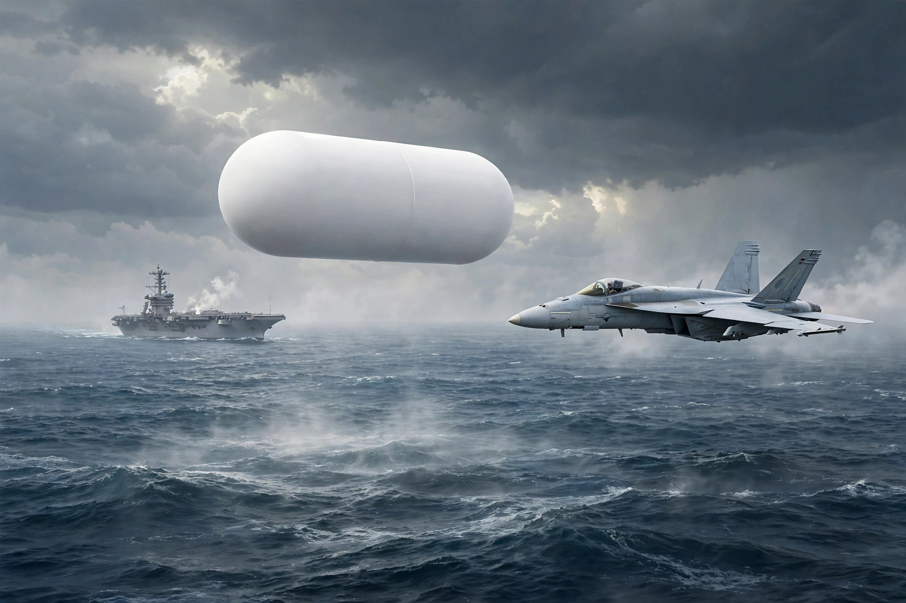
⚠️ AI 生成示意图，非历史实拍
- 原始资料：FLIR1 视频（76 秒，五角大楼 2020 年正式公开，公共领域）。
- 时间：2004 年 11 月 14 日
- 地点：美国加州圣迭戈外海，尼米兹号航母战斗群训练空域
- 事件概述：普林斯顿号巡洋舰的 SPY-1 雷达连续数天追踪到不明目标；11 月 14 日，两架 F/A-18F（VFA-41 中队）奉命拦截。大卫·弗拉沃（David Fravor）中校与阿莱克斯·迪特里希（Alex Dietrich）中尉目击到一个约 40 英尺长的白色"Tic Tac"糖状物体，无机翼、无尾焰、无可见推进方式，在海面上方悬停并镜像弗拉沃的机动动作，随后瞬间加速消失。一架随后起飞的战机用前视红外（FLIR）吊舱拍下了著名的"FLIR1"视频。
- 关键证人/证据：FLIR1 视频（五角大楼 2020 年确认真实）；舰载雷达操作员证词；四名飞行员（弗拉沃、迪特里希及两名武器系统官）的公开陈述；弗拉沃 2023 年在国会宣誓作证。
- 官方调查结论：五角大楼确认视频由海军人员拍摄、真实未篡改，但未对物体性质下结论；列为"未解释"。
- 可信度：高。理由：军方传感器+多名顶级飞行员+雷达操作员+官方确认视频真实，是 21 世纪证据链最完整的军方案例之一。
- 已证实：视频真实性、雷达追踪、飞行员陈述。未证实：物体的来源与技术原理（任何"反重力引擎"之说都是推测）。
💡 全网同步：在下方讨论串首条点击 👍 / 👎 表情投票；发表留言需要登录 GitHub 账号。
案例 08 · "Gimbal"与"GoFast"视频（2015）
可信度：中
2015 年 1 月 ｜ 美国东海岸外海，罗斯福号航母（USS Theodore Roosevelt）舰载机 VFA-11 中队训练空域
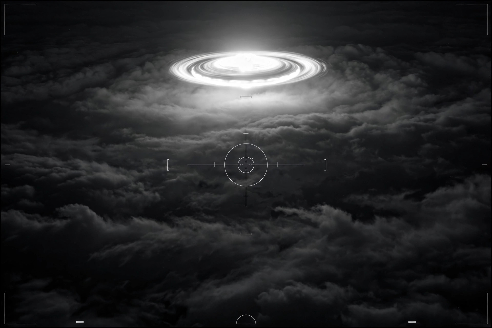
⚠️ AI 生成示意图，非历史实拍
- 时间：2015 年 1 月
- 地点：美国东海岸外海，罗斯福号航母（USS Theodore Roosevelt）舰载机 VFA-11 中队训练空域
- 事件概述：两段由 F/A-18 的 ATFLIR 吊舱拍摄的视频经《纽约时报》2017 年 12 月公开。"Gimbal"中一个发光物体在旋转（飞行员惊呼"它在旋转"）；"GoFast"中一个物体贴近海面高速移动。
- 关键证人/证据：两段视频（五角大楼 2020 年确认真实）；涉事飞行员的公开描述。
- 官方调查结论：视频真实，但性质未解释。需如实记录学术争议：怀疑论者（如 Mick West）用视差与风速数据论证"GoFast"中的物体实际速度很慢、可能是气球，"Gimbal"的旋转可能是红外吊舱云台转动造成的光学假象；支持者认为该解释不能覆盖全部特征。
- 可信度：中。理由：视频真实性无争议，但"异常性"本身存在技术争议，不像 Tic Tac 那样有多重独立佐证。这是"真视频、假异常"可能性的典型，收录时必须保留争议双方。
- 已证实：视频由海军拍摄且真实。未证实：物体表现出超常性能（存在合理的常规解释竞争）。
💡 全网同步：在下方讨论串首条点击 👍 / 👎 表情投票；发表留言需要登录 GitHub 账号。
案例 09 · 阿瓜迪亚事件（波多黎各，2013）
可信度：中
2013 年 4 月 25 日深夜（26 日凌晨） ｜ 波多黎各阿瓜迪亚，拉斐尔·埃尔南德斯机场附近
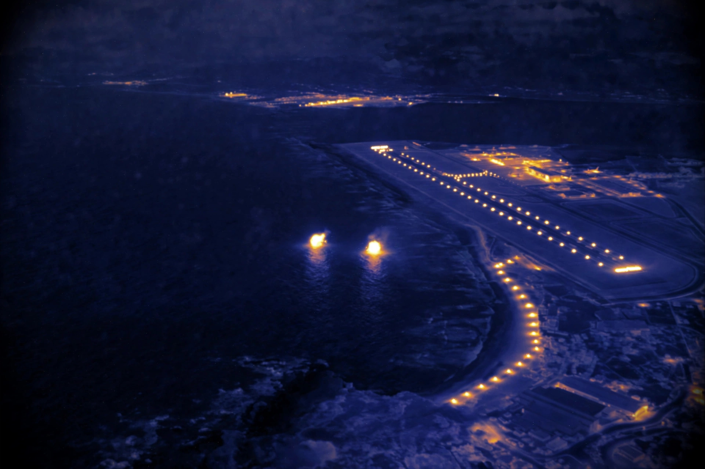
⚠️ AI 生成示意图，非历史实拍
- 时间：2013 年 4 月 25 日深夜（26 日凌晨）
- 地点：波多黎各阿瓜迪亚，拉斐尔·埃尔南德斯机场附近
- 事件概述：美国海关与边境保护局（CBP）一架 DHC-8 巡逻机起飞后不久，机组目视发现一团红色灯光，机场塔台亦无法识别；机组用 Wescam MX-15D 红外吊舱持续跟踪，拍下一段约 3 分钟的视频：一个约 3–5 英尺的物体以 40–120 英里/时低空飞行，画面显示它似乎"一分为二"并没入海中又重现。
- 关键证人/证据：红外视频（后泄露公开）；科学联盟（SCU）耗时两年、165 页的技术分析报告，认为无法用已知飞行器、鸟类或气象现象解释，并通过 FOIA 获得的 FAA 雷达数据佐证了时间与位置。
- 官方调查结论：2025 年 3 月，五角大楼"全域异常解析办公室"（AARO）发布案件终结报告：以"高度信心"认定视频中物体未表现异常速度与机动，"中等信心"认定为一对孔明灯；所谓"入水"与"分裂"是红外热对比度变化与两个邻近物体的视觉假象。SCU 方面不接受该结论。
- 可信度：中。理由：这是"证据真实、解读对立"的典型——视频与雷达数据真实，但 SCU（异常）与 AARO（孔明灯）给出完全相反的结论。档案馆必须并列双方，不选边。
- 已证实：视频真实、CBP 飞机与塔台的原始报告。未证实：跨介质航行（AARO 已给出反证，SCU 不服——争议中）。
💡 全网同步：在下方讨论串首条点击 👍 / 👎 表情投票；发表留言需要登录 GitHub 账号。
案例 10 · USS 奥马哈号事件（2019）
可信度：中
2019 年 7 月 15 日深夜 ｜ 美国加州圣迭戈外海，"奥马哈"号濒海战斗舰（USS Omaha, LCS-12）作战信息中心
⚠️ AI 生成示意图，非历史实拍
- 时间：2019 年 7 月 15 日深夜
- 地点：美国加州圣迭戈外海，"奥马哈"号濒海战斗舰（USS Omaha, LCS-12）作战信息中心
- 事件概述：舰载传感器发现多个不明目标；一段泄露视频显示一个直径约 6 英尺的球形物体在海面上方悬停、横向移动后没入水中（画外音"它溅起水花了"），雷达测得其速度 74–254 公里/时，事件持续逾一小时，未找到残骸。另有雷达画面显示当晚 14 个不明目标在舰只周围活动。
- 关键证人/证据：视频与雷达截图（由纪录片导演杰里米·科贝尔 2021 年 5 月公开）；五角大楼发言人确认视频确由海军人员拍摄。
- 官方调查结论：仅确认视频真实性，未解释物体性质与"入水"情节。
- 可信度：中。理由：影像真实性获官方背书是加分项；但"跨介质飞行器"的解读来自科贝尔单方面陈述，视频本身经过剪辑（翻拍自监视器），且无打捞物证。注意：科贝尔是 UFO 纪录片导演，身份上存在"利益相关"的提醒必要。
- 已证实：视频为海军拍摄、真实。未证实：物体入水后去向、是否为"跨介质载具"。
💡 全网同步：在下方讨论串首条点击 👍 / 👎 表情投票；发表留言需要登录 GitHub 账号。
案例 11 · 卡尔瓦因照片（1990）
可信度：中
1990 年 8 月 4 日傍晚 ｜ 英国苏格兰珀斯郡卡尔瓦因附近山地
⚠️ AI 生成示意图，非历史实拍
- 时间：1990 年 8 月 4 日傍晚
- 地点：英国苏格兰珀斯郡卡尔瓦因附近山地
- 事件概述：两名徒步者在山上看到一个约 100 英尺长的菱形金属物体在空中悬停约 10 分钟（伴有低沉嗡鸣），远处有战机飞过；物体随后急速升空消失。两人拍摄了 6 张照片，交给《每日纪事报》，报社转交英国国防部（MoD），之后照片"消失"、报道从未发表。
- 关键证人/证据：其中一张照片的复印件由前皇家空军新闻官克雷格·林赛（Craig Lindsay）保存 30 余年，2022 年 8 月经学者大卫·克拉克（David Clarke）追查后公开，现存谢菲尔德哈勒姆大学档案馆；MoD 解密文件证实当年确有调查。
- 官方调查结论：MoD 当年未公开结论；照片公开后官方无新的解释。
- 可信度：中。理由：照片来源链条（报社→MoD→新闻官私藏→学者追回）有文件支撑，是"最清晰的 UFO 照片"候选；但两名拍摄者身份至今不明、无法重新访谈，且只有复印件而非底片。这是加分与减分同样明显的一例。
- 已证实：照片流转链条、MoD 曾持有。未证实：照片中物体是什么、拍摄者陈述的细节。
💡 全网同步：在下方讨论串首条点击 👍 / 👎 表情投票；发表留言需要登录 GitHub 账号。
案例 12 · 德黑兰 1976 年 F-4 拦截事件
可信度：高
1976 年 9 月 19 日凌晨 ｜ 伊朗德黑兰
⚠️ AI 生成示意图，非历史实拍
- 时间：1976 年 9 月 19 日凌晨
- 地点：伊朗德黑兰
- 事件概述：午夜后大量市民报告市中心上空有明亮多彩物体，伊朗空军先后起飞两架 F-4"鬼怪"战机拦截。第一架在接近至 25 海里时全部仪表与通信失灵，脱离后恢复；第二架（飞行员帕尔维兹·贾法里少校）雷达锁定目标（回波相当于波音 707 大小），准备发射 AIM-9 导弹时武器控制面板失灵，同时一个较小的发光体从母体分离直扑战机，贾法里俯冲规避。
- 关键证人/证据：美国国防情报局（DIA）报告（随员奥林·穆伊中校根据对伊朗军人的直接询问写成），分发至白宫、国务卿、参联会、NSA、CIA，已解密；贾法里 2007 年在华盛顿全国记者俱乐部公开作证。
- 官方调查结论：DIA 报告将其评估为"真实报告、特征异常"，从未被撤回；无最终解释。
- 可信度：高。理由：电磁干扰效应在两架独立战机上重复出现、DIA 正式情报评估背书，是冷战时期证据等级最高的军方案例之一。
- 已证实：拦截过程、仪表失灵、DIA 报告。未证实：物体的来源（贾法里个人倾向非 terrestrial 解释，但那是他的观点，不是证据结论）。
💡 全网同步：在下方讨论串首条点击 👍 / 👎 表情投票；发表留言需要登录 GitHub 账号。
案例 13 · 日航 1628 号航班事件（1986）
可信度：高
1986 年 11 月 17 日 ｜ 美国阿拉斯加上空
⚠️ AI 生成示意图，非历史实拍
- 时间：1986 年 11 月 17 日
- 地点：美国阿拉斯加上空
- 事件概述：日航 1628 号波音 747 货机（巴黎—安克雷奇—东京）机长寺内谦寿（前战斗机飞行员，超 10000 小时飞行经验）与两名机组报告：两个发光体伴飞，随后一个"巨大母船"（寺内形容"有两艘航空母舰那么大"）出现并跟踪约 50 分钟，驾驶舱被强光照亮。
- 关键证人/证据：三名机组一致的陈述与手绘示意图；FAA 与军方雷达最初确认捕捉到不明目标（后改口称可能是气象回波）；FAA 发言人最终表态"接受机组的描述，但无法证实他们看到了什么"。
- 官方调查结论：FAA 未给出确定解释；怀疑论者认为可能是木星与火星的误认。
- 可信度：高。理由：三名职业机组、长时间、多阶段的目击，雷达曾确认——尽管官方后来退缩。行星误认说难以解释雷达回波与 50 分钟的伴飞机动。
- 已证实：机组报告、雷达曾确认、FAA 的暧昧收场。未证实："母船"的尺寸描述（巨大发光体在夜间的尺寸极易被高估）。
💡 全网同步：在下方讨论串首条点击 👍 / 👎 表情投票；发表留言需要登录 GitHub 账号。
案例 14 · 奥黑尔机场事件（2006）
可信度：中
2006 年 11 月 7 日 16:15 左右 ｜ 美国芝加哥奥黑尔国际机场，美联航 C17 登机口上空
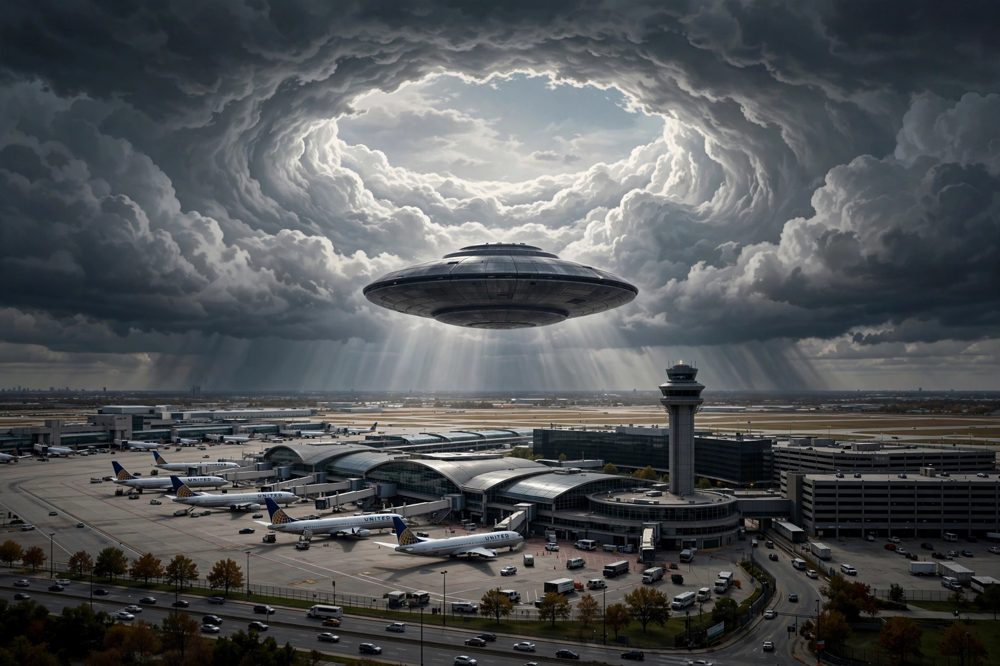
⚠️ AI 生成示意图，非历史实拍
- 时间：2006 年 11 月 7 日 16:15 左右
- 地点：美国芝加哥奥黑尔国际机场，美联航 C17 登机口上空
- 事件概述：约 12 名美联航员工（飞行员、机械师、调度员、管理层）看到一个深灰色金属碟形物在 C17 上方约 1500 英尺处无声悬停数分钟，随后垂直高速升空，在 1900 英尺的云层中"打出"一个清晰的圆形空洞，空洞持续十余分钟才闭合。
- 关键证人/证据：十余名航空业内人士的一致陈述；FAA 内部通话录音（FOIA 获得）；NARCAP 技术报告。
- 官方调查结论：FAA 拒绝调查，称"天气现象"，但未解释天气如何打出圆形云洞；雷达无记录。
- 可信度：中。理由：证人质量高、数量多，且有"云洞"这一罕见的物理效应描述；但无影像、无雷达，且部分证词在形状细节上有出入。FAA 的回应方式本身成为争议点。
- 已证实：多人目击、FAA 通话录音。未证实：云洞的成因（NARCAP 估算需约 9.4 kJ/m³ 的能量，是推测性计算）。
💡 全网同步：在下方讨论串首条点击 👍 / 👎 表情投票；发表留言需要登录 GitHub 账号。
案例 15 · 索科罗/萨莫拉事件（1964）
可信度：高
1964 年 4 月 24 日 ｜ 美国新墨西哥州索科罗镇外
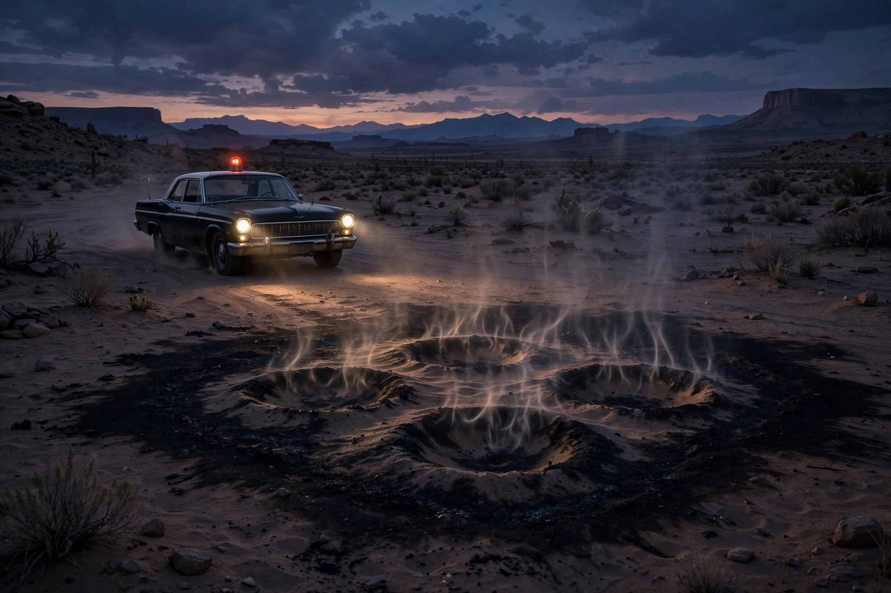
⚠️ AI 生成示意图，非历史实拍
- 时间：1964 年 4 月 24 日
- 地点：美国新墨西哥州索科罗镇外
- 事件概述：警官隆尼·萨莫拉（Lonnie Zamora）追击一辆超速汽车时，看到远处降落一个蛋形飞行器和两个小个子身影；他接近时物体喷火升空，现场留下烧焦痕迹和四个压痕。
- 关键证人/证据：萨莫拉（职业警察，声誉良好）；FBI 与空军调查人员勘查的着陆痕迹；蓝皮书计划科学顾问海尼克（J. Allen Hynek）亲自调查。
- 官方调查结论：蓝皮书计划将其列为"未解释"（unidentified）——这是蓝皮书档案中少数未被归类的著名案例之一。
- 可信度：高。理由：可信的职业证人+物理痕迹+官方"未解释"定级，三者齐备。
- 已证实：着陆痕迹、蓝皮书"未解释"结论。未证实："小个子身影"的细节（仅萨莫拉一人看到）。
💡 全网同步：在下方讨论串首条点击 👍 / 👎 表情投票；发表留言需要登录 GitHub 账号。
案例 16 · 马姆斯特罗姆空军基地导弹事件（1967）
可信度：高
1967 年 3 月 16 日（回声小队，Echo Flight） ｜ 美国蒙大拿州马姆斯特罗姆空军基地导弹发射场
⚠️ AI 生成示意图，非历史实拍
- 时间：1967 年 3 月 16 日（回声小队，Echo Flight）
- 地点：美国蒙大拿州马姆斯特罗姆空军基地导弹发射场
- 事件概述：不明发光物体出现在导弹发射井上空的同时，10 枚"民兵"洲际导弹相继离线（进入"不可发射"状态）。导弹操作官罗伯特·萨拉斯（Robert Salas）上尉与鲍勃·贾米森（Bob Jamison）中尉分别在不同发射控制中心经历并报告了此事。
- 关键证人/证据：两名导弹发射官的证词；空军事故电文记录导弹离线事实。
- 官方调查结论：空军称是电磁脉冲/设备故障，与 UFO 无关；但从未解释为何 10 枚独立系统的导弹同时故障。
- 可信度：高。理由：核武器系统的异常关机有书面记录，证人是值班军官。这是"UFO 与核设施"关联系列中最硬的一例（同类还包括 1975 年多基地入侵、1980 年伦德尔舍姆亦在核基地旁）。
- 已证实：导弹离线记录、证人证词。未证实：不明物体与导弹故障的因果关系（时间相关≠因果，这是必须标注的逻辑线）。
💡 全网同步：在下方讨论串首条点击 👍 / 👎 表情投票；发表留言需要登录 GitHub 账号。
案例 17 · 韦斯托尔学校事件（1966）
可信度：中
1966 年 4 月 6 日 ｜ 澳大利亚墨尔本韦斯托尔高中
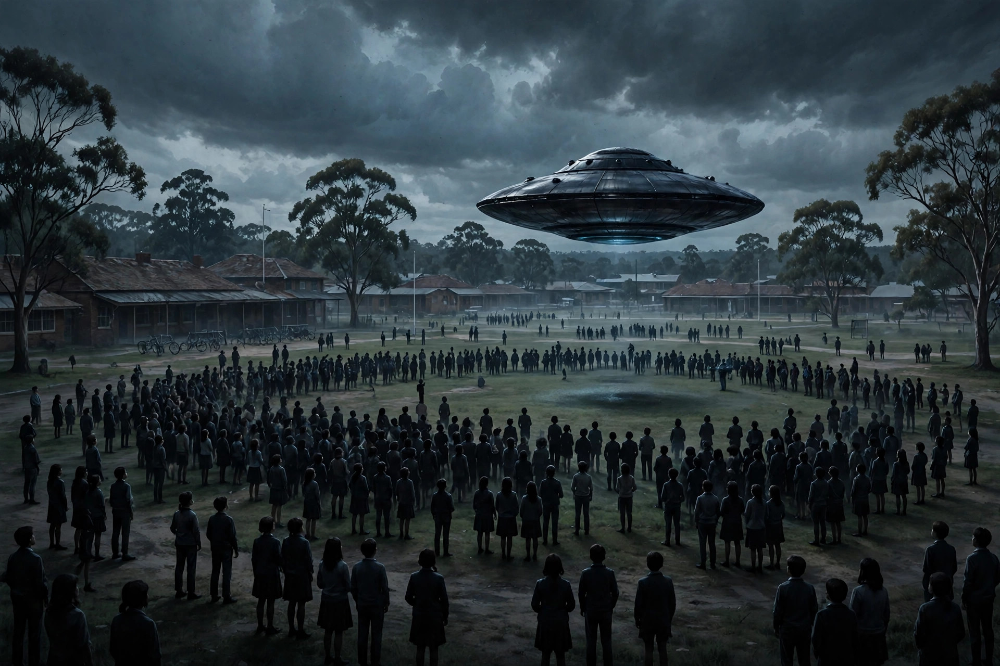
⚠️ AI 生成示意图，非历史实拍
- 时间：1966 年 4 月 6 日
- 地点：澳大利亚墨尔本韦斯托尔高中
- 事件概述：200 多名师生目击一个碟形物体在学校附近草地上空低空悬停后降落（或近地飞行），随后迅速升空离去。事件在当年澳大利亚媒体上有报道。
- 关键证人/证据：200 余名师生（多为青少年）的集体目击；当年《时代报》（The Age）等媒体报道。
- 官方调查结论：官方曾以"气象气球"解释，但目击者普遍不接受；学校校长据称被要求不得谈论此事（说法来自当事人回忆，未完全证实）。
- 可信度：中。理由：人数众多、陈述高度一致是强项；但证人多为未成年人、时隔久远，且无影像与物理证据。"校方被噤声"属未证实说法，收录时需标注。
- 已证实：大规模目击、当年媒体报道。未证实：物体降落的细节、"被噤声"情节。
💡 全网同步：在下方讨论串首条点击 👍 / 👎 表情投票；发表留言需要登录 GitHub 账号。
案例 18 · 阿里尔学校事件（1994）
可信度：中
1994 年 9 月 16 日 ｜ 津巴布韦鲁瓦市阿里尔学校
⚠️ AI 生成示意图，非历史实拍
- 时间：1994 年 9 月 16 日
- 地点：津巴布韦鲁瓦市阿里尔学校
- 事件概述：62 名 8–12 岁的学生在课间看到一个发光碟形物降落在学校旁的灌木丛中，走出"小个子身影"；孩子们描述了高度一致的细节（大眼睛、紧身衣），并画出相似的图画。哈佛大学精神病学家约翰·麦克（John Mack）专程前往调查。
- 关键证人/证据：62 名儿童的一致陈述与绘画；麦克的调查记录；BBC 纪录片素材。
- 官方调查结论：无官方调查；怀疑论者认为是群体性癔症或恶作剧。
- 可信度：中。理由：人数多、细节一致、跨文化背景下自发画出相似图像，难以用简单的"串供"解释；但证人全是儿童、无成人目击、无物证，这是硬伤。麦克本人的学术声誉后来也因这类研究受损，需如实注明。
- 已证实：儿童们的陈述与绘画。未证实："外星人传达环保信息"等转述内容（系孩子们的事后表述）。
💡 全网同步：在下方讨论串首条点击 👍 / 👎 表情投票；发表留言需要登录 GitHub 账号。
案例 19 · 凯克斯堡事件（1965）
可信度：中
1965 年 12 月 9 日 ｜ 美国宾夕法尼亚州凯克斯堡
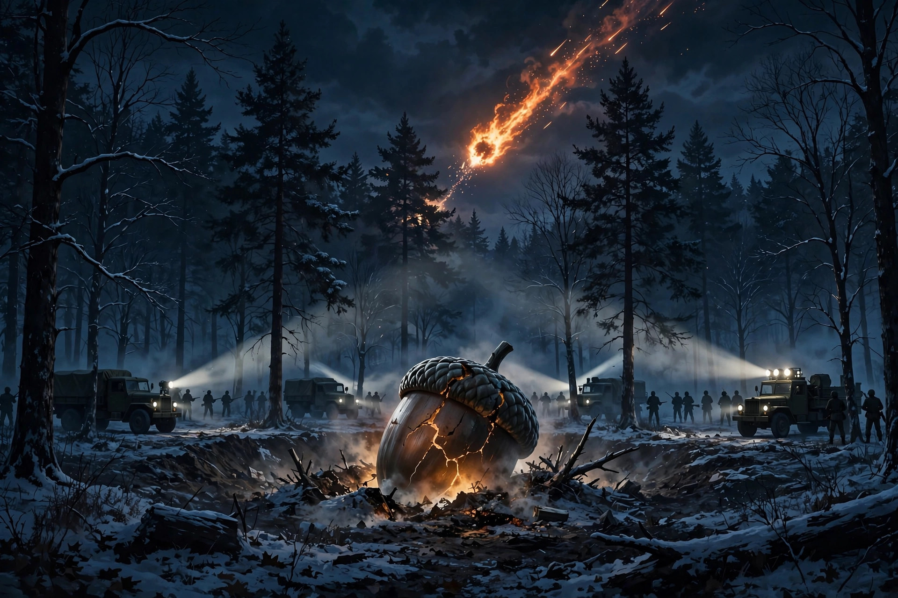
⚠️ AI 生成示意图，非历史实拍
- 时间：1965 年 12 月 9 日
- 地点：美国宾夕法尼亚州凯克斯堡
- 事件概述：多州居民看到巨大火球划过天空；凯克斯堡当地居民报告一个橡子状物体坠入树林，随后军方迅速封锁现场并运走"某物"。
- 关键证人/证据：大量火球目击者；当地居民关于军方封锁的陈述；NASA 2005 年承认相关记录"丢失"。
- 官方调查结论：空军称是陨石；科幻作家及调查者指出当年苏联"宇宙-96"金星探测器（Cosmos 96）恰在同日再入大气层，时间与轨迹吻合。
- 可信度：中。理由：火球与坠落物是两回事——火球大概率是陨石/太空垃圾，但"军方封锁并运走物体"的多名证人陈述从未被令人信服地解释。"宇宙-96"说是目前最强的常规解释，但苏联从未确认。
- 已证实：火球、军方到场。未证实：运走的"橡子状物体"（无照片、无残骸）。
💡 全网同步：在下方讨论串首条点击 👍 / 👎 表情投票；发表留言需要登录 GitHub 账号。
案例 20 · 瓦朗索尔事件（1965）
可信度：中
1965 年 7 月 1 日 ｜ 法国普罗旺斯瓦朗索尔
⚠️ AI 生成示意图，非历史实拍
- 时间：1965 年 7 月 1 日
- 地点：法国普罗旺斯瓦朗索尔
- 事件概述：农民莫里斯·马斯（Maurice Masse）在薰衣草田看到一个橄榄球状飞行器和两个小个子身影，试图接近时被一道光束"定住"动弹不得，约 15 分钟后物体升空离去，现场留下压痕与土壤变化。
- 关键证人/证据：马斯的陈述；法国官方 UFO 研究机构 GEPAN（法国空间研究中心下属）调查，确认了着陆痕迹；土壤样本曾被送检。
- 官方调查结论：GEPAN 将其列为"未解释"（D 类）。
- 可信度：中。理由：法国官方机构的正式调查与"未解释"定级是加分项；但本质上是单人目击，马斯后来拒绝再谈此事，无法复核。
- 已证实：着陆痕迹、GEPAN 调查记录。未证实："被光束麻痹"的生理机制。
💡 全网同步：在下方讨论串首条点击 👍 / 👎 表情投票；发表留言需要登录 GitHub 账号。
案例 21 · 卡什-兰德拉姆事件（1980）
可信度：中
1980 年 12 月 29 日 ｜ 美国得克萨斯州休斯敦东北松林地
⚠️ AI 生成示意图，非历史实拍
- 时间：1980 年 12 月 29 日
- 地点：美国得克萨斯州休斯敦东北松林地
- 事件概述：贝蒂·卡什（Betty Cash）、薇姬·兰德拉姆（Vickie Landrum）与孙子科尔比驾车时遭遇一个喷火的菱形巨物低空悬停，伴随 20 余架直升机；三人事后出现类似辐射病的症状（恶心、脱发、皮肤灼伤），贝蒂住院近一个月。
- 关键证人/证据：三名当事人的一致陈述；医院的医疗记录（症状真实）；当事人 1981 年起诉美国政府（1986 年被驳回，法院认为无法证明涉事飞行器属美军）。
- 官方调查结论：法院驳回诉讼；无官方机构承认与任何已知飞行器有关。
- 可信度：中。理由：人身伤害的医疗记录真实，"菱形喷火物+直升机群"的组合指向某种人类军事活动（如试验飞行器事故）的可能性不能排除；但"美国政府拥有该飞行器"从未被证实，诉讼也被驳回。
- 已证实：医疗记录、诉讼与驳回。未证实：飞行器的归属（军方试验品与"非人类飞行器"都只是假说）。
💡 全网同步：在下方讨论串首条点击 👍 / 👎 表情投票；发表留言需要登录 GitHub 账号。
案例 22 · 弗雷德里克·瓦伦蒂奇失踪事件（1978）
可信度：中
1978 年 10 月 21 日 ｜ 澳大利亚巴斯海峡上空
⚠️ AI 生成示意图，非历史实拍
- 时间：1978 年 10 月 21 日
- 地点：澳大利亚巴斯海峡上空
- 事件概述：20 岁飞行员弗雷德里克·瓦伦蒂奇（Frederick Valentich）驾驶塞斯纳 182 从墨尔本飞往国王岛，途中向空管报告"有一个奇怪的飞行器"在伴飞，描述其"不是飞机"，通话在约 6 分钟后中断，最后传来"金属刮擦声"。飞机与人至今未找到。
- 关键证人/证据：墨尔本空管的完整通话录音（已公开）；官方搜救记录。
- 官方调查结论：澳大利亚交通部调查认为可能是飞行员空间定向障碍导致坠海（"倒扣飞行错觉"），但无法解释通话内容；残骸从未找到。
- 可信度：中。理由：失踪是事实、通话录音是硬证据；但"UFO 导致失踪"只是基于通话内容的推测，同样无法排除飞行员失误+恰好看到其他飞行器/天体的可能。
- 已证实：失踪、通话录音。未证实：失踪与不明飞行器的因果关系。
💡 全网同步：在下方讨论串首条点击 👍 / 👎 表情投票；发表留言需要登录 GitHub 账号。
案例 23 · 墨西哥空军"坎佩切"视频事件（2004）——附：已被解释
?
2004 年 3 月 5 日 ｜ 墨西哥坎佩切州上空
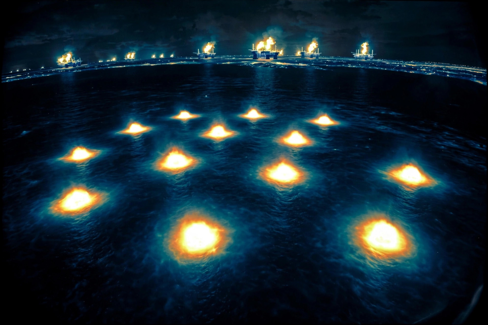
⚠️ AI 生成示意图，非历史实拍
- 时间：2004 年 3 月 5 日
- 地点：墨西哥坎佩切州上空
- 事件概述：墨西哥空军一架"梅林"C26A 巡逻机用红外吊舱拍到 11 个炽热光球，墨西哥国防部主动公开视频，一时轰动。
- 关键证人/证据：军方红外视频（真实）；机组证词。
- 官方调查结论：后续分析（包括法国空间研究中心 CNES 参与的研判）认定光球是坎塔雷尔油田的天然气燃烧火炬——红外成像下油田火炬正是这种"炽热光球"形态，且方位吻合。这是"军方视频+官方公开"却被常规解释的经典反例，收录目的是提醒：连军方红外视频都可能被误读。
- 可信度：作为"异常案例"为低（已解释）；作为"方法论警示案例"价值高。
- 已证实：视频真实、油田火炬解释。未证实：无（本案已闭环）。
💡 全网同步：在下方讨论串首条点击 👍 / 👎 表情投票；发表留言需要登录 GitHub 账号。
案例 24 · 莱维兰车辆熄火事件（1957）
可信度：中
1957 年 11 月 2–3 日 ｜ 美国得克萨斯州莱维兰镇附近
⚠️ AI 生成示意图，非历史实拍
- 时间：1957 年 11 月 2–3 日
- 地点：美国得克萨斯州莱维兰镇附近
- 事件概述：多名驾车者报告一个巨大的发光蛋形物体在公路附近低空出现；汽车发动机与车灯在物体接近时熄灭，物体离去后恢复。多名警察也是目击者。
- 关键证人/证据：十余名目击者（含警察）；蓝皮书计划调查档案。
- 官方调查结论：蓝皮书将其归为"球状闪电"与"电气风暴"（当时当地确有强雷暴）；质疑者指出雷暴说无法解释全部目击的时间与位置对应。
- 可信度：中。理由：多人目击+车辆物理效应+警察证人是强项；但无线电/雷达记录缺失，且官方给出了有争议的常规解释。
- 已证实：目击报告、车辆熄火的多人陈述、蓝皮书调查。未证实：物体的性质。
💡 全网同步：在下方讨论串首条点击 👍 / 👎 表情投票；发表留言需要登录 GitHub 账号。
案例 25 · RB-47 电子侦察机遭遇事件（1957）
可信度：高
1957 年 7 月 17 日 ｜ 美国南部上空（得克萨斯—俄克拉荷马—阿肯色一线）
⚠️ AI 生成示意图，非历史实拍
- 时间：1957 年 7 月 17 日
- 地点：美国南部上空（得克萨斯—俄克拉荷马—阿肯色一线）
- 事件概述：一架空军 RB-47 电子侦察机在约 700 英里的航程中被一不明目标跟踪；机组目视看到发光体的同时，机载电子对抗设备（ECM）在相同方位截获到信号；多个地面雷达站也追踪到目标。
- 关键证人/证据：6 名机组人员；ECM 设备记录；地面雷达佐证；蓝皮书档案有完整记录。
- 官方调查结论：蓝皮书计划列为"未解释"（unidentified）。
- 可信度：高。理由：目视+机载电子设备+地面雷达三重印证，职业机组，是 1950 年代电子证据最硬的一例。
- 已证实：遭遇过程、ECM 与雷达记录。未证实：目标的身份。
💡 全网同步：在下方讨论串首条点击 👍 / 👎 表情投票；发表留言需要登录 GitHub 账号。
案例 26 · 莱肯希思-本特沃特斯事件（1956）
可信度：高
1956 年 8 月 13–14 日 ｜ 英国萨福克郡（本特沃特斯与莱肯希思空军基地）
⚠️ AI 生成示意图，非历史实拍
- 时间：1956 年 8 月 13–14 日
- 地点：英国萨福克郡（本特沃特斯与莱肯希思空军基地）
- 事件概述：本特沃特斯基地雷达追踪到多个不明目标；英国皇家空军"毒液"战机紧急起飞拦截，飞行员报告目视接触并发射雷达锁定；莱肯希思方向亦有雷达追踪到高速目标。
- 关键证人/证据：美军与英军多座雷达站记录、拦截飞行员证词；康顿委员会复核过此案。
- 官方调查结论：康顿报告对部分雷达回波提出"假回波/流星"解释，但未能覆盖全部特征，争议延续至今。
- 可信度：高。理由：雷达+目视+战机拦截，跨军种多站印证。
- 已证实：雷达记录、拦截行动、飞行员陈述。未证实：目标的真实性质。
💡 全网同步：在下方讨论串首条点击 👍 / 👎 表情投票；发表留言需要登录 GitHub 账号。
案例 27 · 米诺特空军基地 B-52 事件（1968）
可信度：高
1968 年 10 月 24 日 ｜ 美国北达科他州米诺特空军基地
⚠️ AI 生成示意图，非历史实拍
- 时间：1968 年 10 月 24 日
- 地点：美国北达科他州米诺特空军基地
- 事件概述：一架 B-52 轰炸机机组在空中看到一个巨大的发光体伴飞；米诺特基地地面雷达同步追踪到目标，显示其高速机动；地面导弹维护人员也目击了发光体。
- 关键证人/证据：B-52 机组证词、地面雷达数据、地面目击者；经 FOIA 解密的蓝皮书档案。
- 官方调查结论：蓝皮书计划列为"未解释"。
- 可信度：高。理由：空中机组+地面雷达+地面人员三方印证，且有解密文件支撑。
- 已证实：雷达数据、机组与地面人员的报告。未证实：发光体的身份。
💡 全网同步：在下方讨论串首条点击 👍 / 👎 表情投票；发表留言需要登录 GitHub 账号。
案例 28 · 巴西科拉雷斯"飞碟行动"（1977）
可信度：高
1977 年（高峰为 10–12 月） ｜ 巴西帕拉州科拉雷斯岛
⚠️ AI 生成示意图，非历史实拍
- 时间：1977 年（高峰为 10–12 月）
- 地点：巴西帕拉州科拉雷斯岛
- 事件概述：当地居民报告被发光体（被称为"chupa-chupa"）照射后出现灼伤、针刺伤；巴西空军启动"普拉托行动"（Operação Prato）正式调查，拍摄了照片与影片；数百页官方文件后解密。
- 关键证人/证据：巴西空军官方调查档案（已解密）、照片与影片、数百名目击者、伤者的医疗记录。
- 官方调查结论：巴西空军从未公布最终解释；文件证实调查真实进行。
- 可信度：高。理由：主权国家空军的正式调查+大规模目击+解密文件，证据等级极高。但"光束致伤"的机理仅来自当事人陈述，需标注。
- 已证实：空军调查行动、解密文件、大规模目击。未证实：发光体的性质、"光束致伤"的机理。
💡 全网同步：在下方讨论串首条点击 👍 / 👎 表情投票；发表留言需要登录 GitHub 账号。
案例 29 · 新西兰凯库拉事件（1978）
可信度：高
1978 年 12 月 21 日、30 日 ｜ 新西兰凯库拉外海
⚠️ AI 生成示意图，非历史实拍
- 时间：1978 年 12 月 21 日、30 日
- 地点：新西兰凯库拉外海
- 事件概述：一支澳大利亚电视摄制组搭乘货机拍摄到不明灯光；惠灵顿空管雷达同时在相同位置追踪到目标；影片经国际播出轰动一时。
- 关键证人/证据：16 毫米胶片、空管雷达录音、多名机组与摄制人员。
- 官方调查结论：新西兰与美国的调查提出"鱿钓船灯光/金星"等解释；但雷达与影像的时间位置对应关系难以被这些解释完全覆盖，争议持续。
- 可信度：高。理由：影像+雷达同步印证，职业摄制组。
- 已证实：影片、雷达对应记录。未证实：灯光的真实来源。
💡 全网同步：在下方讨论串首条点击 👍 / 👎 表情投票；发表留言需要登录 GitHub 账号。
案例 30 · 萧山机场不明飞行物事件（2010）
可信度：中
2010 年 7 月 7 日晚 ｜ 中国浙江省杭州市萧山国际机场
⚠️ AI 生成示意图，非历史实拍
- 时间：2010 年 7 月 7 日晚
- 地点：中国浙江省杭州市萧山国际机场
- 事件概述：机场因发现不明飞行物关闭约一小时，多架航班备降、分流；事件经国内媒体广泛报道，现场照片在网络流传。
- 关键证人/证据：机场关闭与航班备降的事实、多家媒体报道；网传照片版权与真实性存疑，未采用。
- 官方调查结论：官方未给出确定解释；事后有"私人飞机""导弹试验"等猜测，均未被证实。
- 可信度：中。理由：机场关闭是硬事实、媒体广泛报道；但不明飞行物本身的身份无任何确证，网传照片多无法核实。
- 已证实：机场关闭、航班备降、媒体报道。未证实：不明飞行物的身份、网传照片的真实性。
💡 全网同步：在下方讨论串首条点击 👍 / 👎 表情投票；发表留言需要登录 GitHub 账号。
案例 31 · 贵阳"空中怪车"事件（1994）
可信度：中
1994 年 12 月 1 日凌晨约 3 时 ｜ 中国贵州省贵阳市白云区都溪林场
⚠️ AI 生成示意图，非历史实拍
- 时间：1994 年 12 月 1 日凌晨约 3 时
- 地点：中国贵州省贵阳市白云区都溪林场
- 事件概述：一夜之间约 400 亩松树林被拦腰折断，呈四片断续的带状破坏；林场值班人员与附近车辆厂职工报告凌晨听到巨响、看到红绿强光与低空火球；一辆自重 24 吨的货车车厢被移动约 20 米；现场发现爪形灼烧痕迹。
- 关键证人/证据：林场职工与车辆厂值班人员的陈述、当年媒体报道、CCTV《走近科学》调查；破坏现场的照片与记录。
- 官方调查结论：专家提出球状闪电、陆龙卷、下击暴流等解释，均未能完全说服各方；无官方最终定论。
- 可信度：中。理由：大面积物理破坏真实存在且形态奇特；但成因争议极大，"飞行器经过"说没有任何直接物证。
- 已证实：树木破坏、巨响与光球的多人报告。未证实：破坏的成因、"空中怪车"的存在。
-
-
-
💡 全网同步：在下方讨论串首条点击 👍 / 👎 表情投票；发表留言需要登录 GitHub 账号。